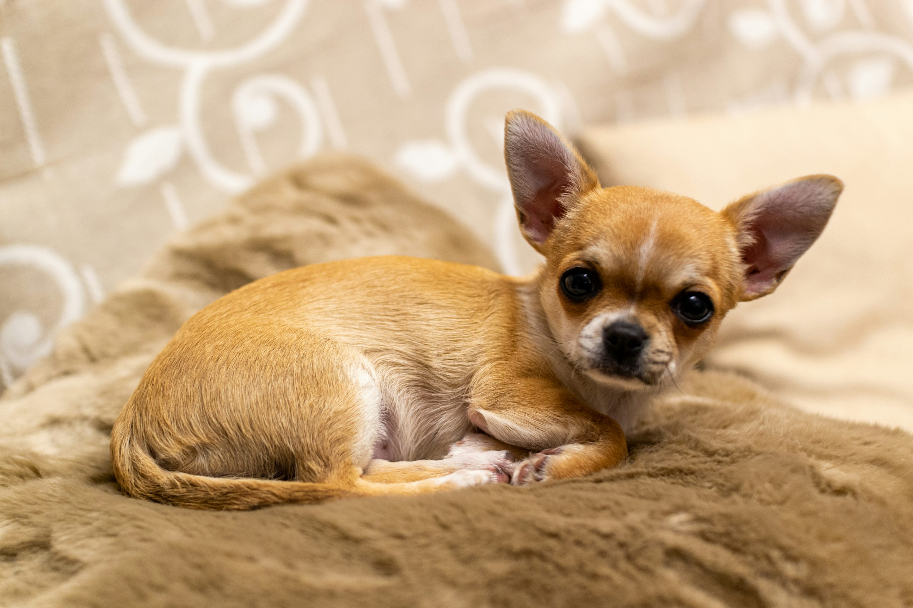

A dia de hoy hay muchisimos animalitos que son abandonados en la calle, asi que nuestra mision es rescatarlos, darles una mejor vida y hacer que tengan la mejor familia.
¡Estos son algunos de los animalitos y sus historias!
Gato Esfinge: "Anubis"

Esta hermosa gata esfinge llegó a nuestra vida de una manera inesperada, y desde el primer momento supimos que estaba destinada a ser parte de una nueva familia. La encontramos en una situación delicada, necesitando urgentemente de cuidados y amor. Al principio, su apariencia sin pelo puede sorprender a algunos, pero su personalidad es absolutamente cautivadora. Es pura elegancia y dulzura.
Chihuahua: "Coco"
El pequeño chihuahua que ha llegado a nuestra vida para demostrarnos que los grandes espíritus pueden venir en los paquetes más diminutos. Lo encontramos deambulando solo, asustado y desorientado. Su cuerpito temblaba y sus ojitos reflejaban la vulnerabilidad de quien ha pasado por mucho. No pudimos dejarlo solo. Con mucha paciencia y cariño, logramos ganarnos su confianza. Hoy es un perrito completamente diferente.